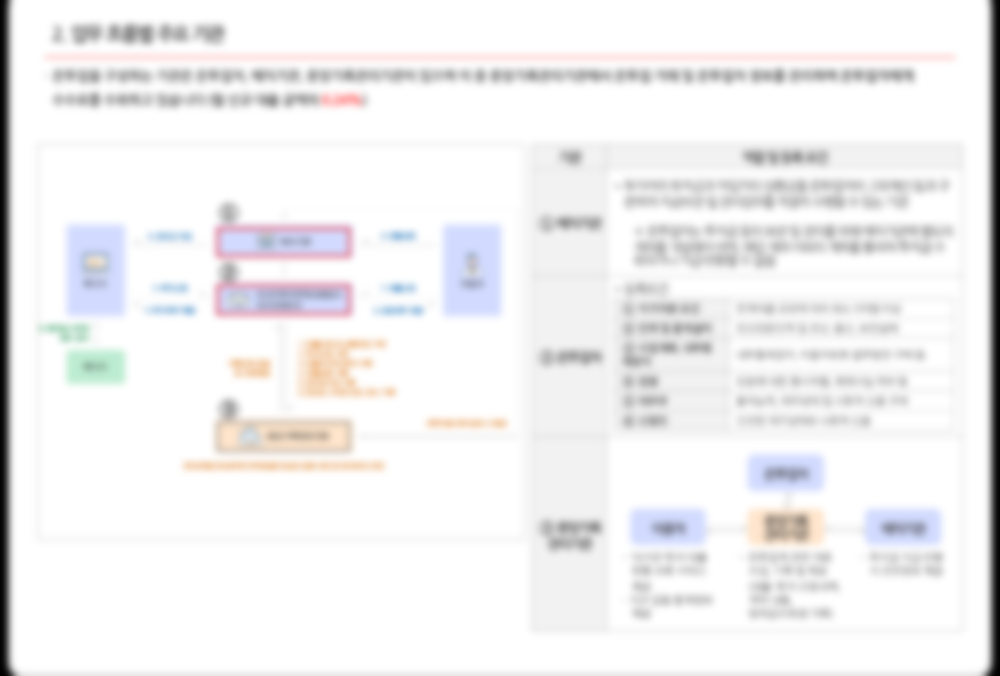
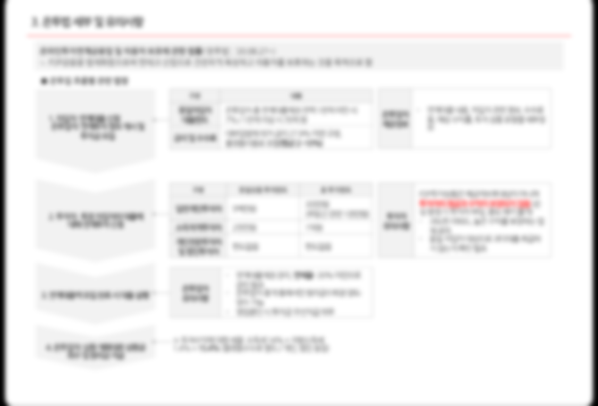
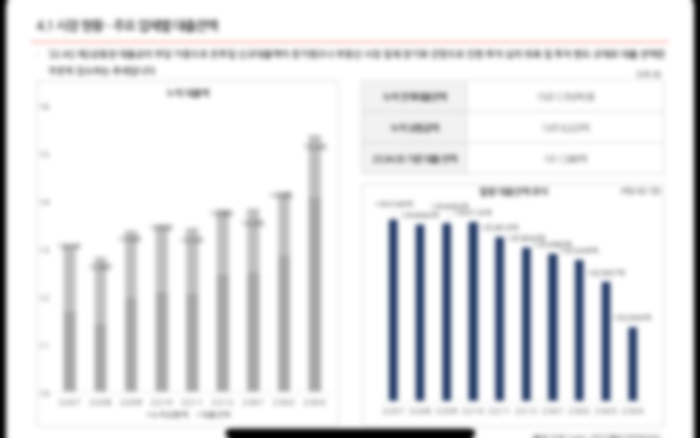
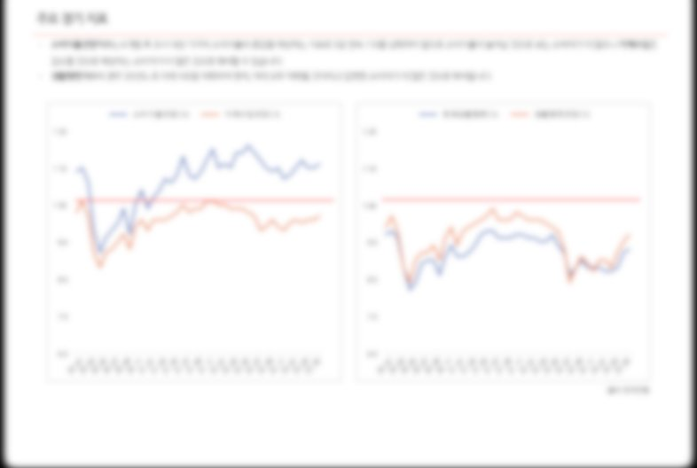
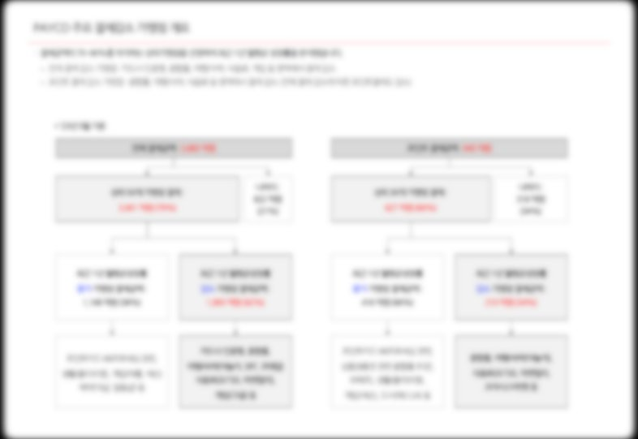
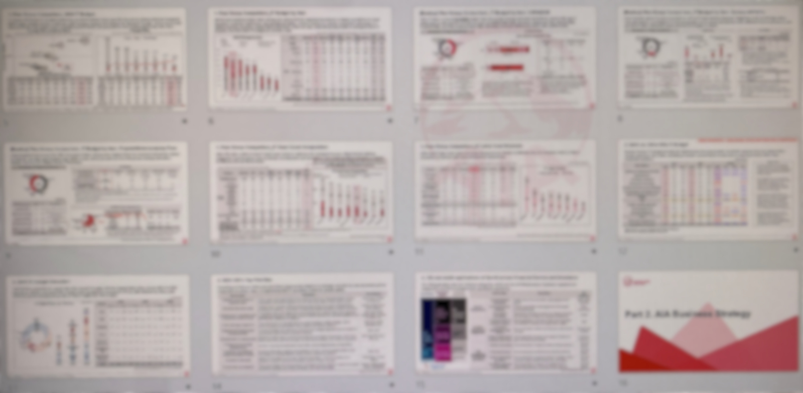
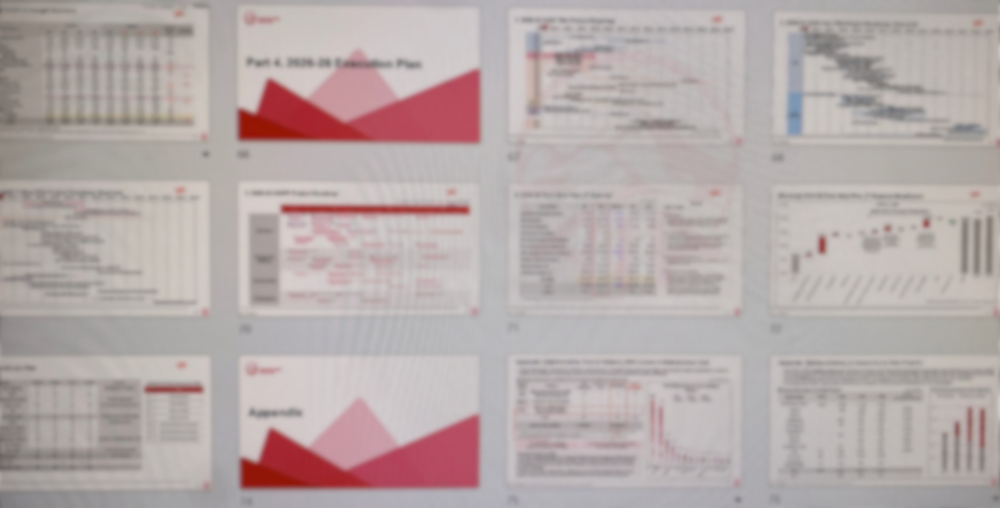
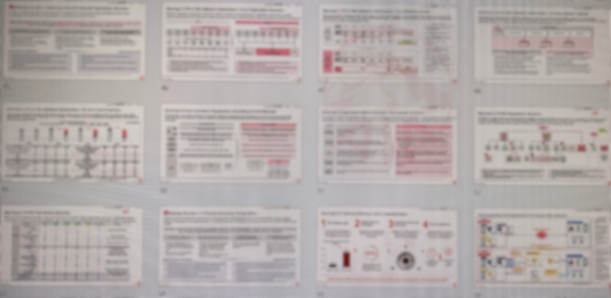
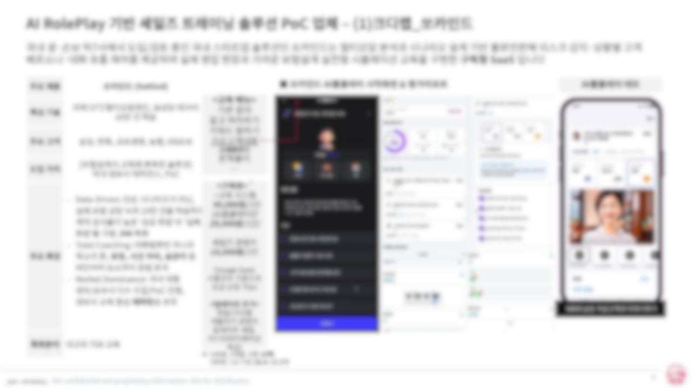
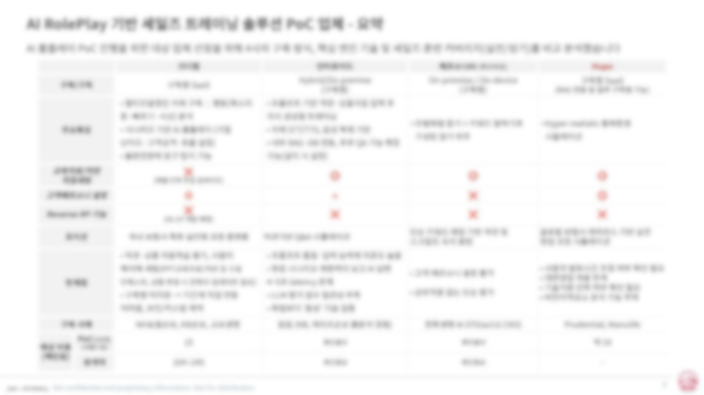

Strategy × Finance × Execution
왕지인
5년 10개월 · NHN 전략기획 → AIA생명 테크기획 · CFA L3
다양한 산업 도메인을 사업 전략 관점에서 분석하며, 수익 구조를 해체해 핵심 드라이버를 찾고 그걸 의사결정으로 연결하는 일을 반복했습니다. NHN에서는 10개 이상 산업의 M&A·투자 검토를 독립적으로 수행하며 경영진의 Go/No-Go를 수치로 뒷받침했고, 매 산업을 거칠수록 분석의 정확도와 속도가 누적적으로 쌓였습니다. AIA에서는 IT 중장기 전략을 현황 진단부터 실행 추적까지 풀 사이클로 설계하며, 한 번의 전략 과제가 다음 과제의 기준이 되는 구조를 만들었습니다. 금융업의 규제와 제약은 전략의 한계가 아니라 전략이 시작되는 지점이라는 것을 AIA에서 체감했고, 그 위에서 토스 앱과 시너지를 극대화하는 뱅킹 서비스를 만드는 전략적 의사결정을 다방면으로 지원하고 싶습니다.
AIA생명테크기획 · IT전략 · 시장분석
·
NHN전략기획 · M&A · 중장기계획
·
롯데이노베이트PI 컨설팅
·
CFALv.3 Candidate
JD Fit
여섯 가지 강점
Strategy → Options
전략을 선택지와 근거로 구조화
NHN에서 PG·VAN·조각투자·SaaS 등 10개+ 산업의 M&A·투자 검토를 독립 수행했습니다. 산업 구조 해체 → 수익/비용 드라이버 분석 → BEP·시너지 산출 → C레벨 보고. 방향이 아닌 선택지와 논거를 만드는 방식입니다.
Hypothesis & Validation
불완전한 정보에서 가설을 검증
페이히어(POS) 투자 검토에서 선례 없이 VAN 수수료·무료 모델 수익 구조를 해체해 공헌이익 BEP를 산출, 고평가 리스크를 사전 식별해 No-Go 의사결정을 지원했습니다. 가설 → 모델 → 검증의 반복입니다.
Full Strategy Cycle
수립에서 실행 추적까지
AIA에서 IT 중장기 전략을 현황 진단 → 핵심과제 도출 → 이행방안 설계 → 월별 실적 추적 구조로 설계했습니다. 전략 문서가 아니라 조직의 다음 행동을 바꾸는 것을 목표로 합니다.
Alignment & Coordination
다조직 의견 충돌을 수렴하기
자회사 설립 프로젝트에서 재무·법무·세무·테크·준법·외부 자문사가 각기 다른 기준을 들고 왔습니다. '그룹 자본 효율성' 지표를 공통 기준으로 이견을 수렴해 이사회 자료로 완결했습니다.
Domain Breadth
도메인별 사업 구조 빠르게 파악
결제·PG·SaaS·여행·커머스·보험·증권 — 토스뱅크와 연결된 산업 대부분에 분석 접점이 있습니다. 낯선 도메인의 수익 구조와 비용 드라이버를 처음부터 빠르게 해체하는 방식을 체득했습니다.
Market & Competitive Intel
경쟁·규제 변화를 전략 인풋으로
AIA에서 생보사 11개사 AI·IT Maturity Matrix를 직접 설계하고 규제·테크 트렌드를 주간 모니터링해 CTO·경영진 대상 Executive Report를 발행했습니다. 시장 신호를 전략 판단으로 연결하는 루틴입니다.
Selected Work
핵심 업무 경험
계열사 전략-실적 연동 · Business Driver 분석
2021 – 2025 · NHN
NHN 전략기획팀
| 상황 | 두레이·코미코·여행박사·에듀 5개 계열사의 실적이 악화되고 있었지만, 경영진 보고는 숫자 결과를 나열하는 수준에 그쳤습니다. 왜 나빠지는지, 어떤 레버를 당겨야 하는지 설명이 없었습니다. |
| 접근 | 계정·원장 단위까지 내려가 비용 구조를 재분류하고 실질 드라이버를 새로 정의했습니다. 두레이는 인프라 고정비 배부 구조를 유닛 단위로 해체해 비용률 30%p를 절감했고, 코미코 일본은 고정/변동비 구조 재진단으로 YoY 적자폭을 57% 축소했습니다. 여행박사는 광고채널별 ROI를 유닛 단위로 측정해 비효율 채널을 차단, ROI를 -50%에서 +10%대로 전환했습니다. 외부 투자자 Put Option 만기 시 계열사별 자본 부담과 연결 현금흐름 시나리오도 직접 모델링했습니다. |
| 결과 | 실적 보고가 드라이버 기반 구조로 전환됐습니다. 경영진이 "왜"를 묻기 전에 원인과 개선 레버를 제시하는 체계가 됐고, 이 프레임이 이후 투자·제휴 검토의 기본 포맷이 됐습니다. |



M&A · 투자 · 전략적 제휴 검토
2022 – 2025 · NHN
NHN 전략기획팀
| 상황 | PG·VAN·조각투자·SaaS·여행·커머스 등 10개 이상 산업에서 인수·투자·제휴 대상 검토가 수시로 필요했습니다. 산업마다 수익 구조가 달랐고, 정형화된 가이드라인 없이 독립적으로 수행해야 했습니다. |
| 접근 | 산업 구조 해체 → 수익/비용 드라이버 분석 → BEP·시너지 산출 → C레벨 보고의 프레임을 반복 적용했습니다. 페이히어(POS) 투자 검토에서는 VAN 수수료·무료 모델 수익 구조를 해체해 공헌이익 기반 BEP를 산출, 고평가 리스크를 사전 식별해 No-Go 의사결정을 지원했습니다. 솔트룩스·NHN다이퀘스트 매각 지원 시에는 플랫폼 시너지 가치를 수치화했고, NHN Cloud 스토리지 make vs buy 검토에서는 시나리오별 비용·수익 시뮬레이션으로 판단 근거를 제공했습니다. |
| 결과 | 산업이 달라도 같은 구조로 경영진 Pre-review 즉답이 가능해졌습니다. 페이코·두레이 중장기 경영계획에서도 동일 프레임을 적용해 사업 레버별 민감도를 경영진과 공유했습니다. |



IT 중장기 전략 수립 · 전략-실행 풀 사이클
2025 · AIA생명
AIA생명 테크기획팀
| 상황 | 3~5개년 IT 중장기 전략이 필요했지만 기존 방식은 방향성 나열에 그쳤고, 재무계획과 연동되지 않아 예산 배분 근거가 약했습니다. 전략이 실행으로 이어지는 구조가 없었습니다. |
| 접근 | 시스템·조직·운영효율·예산 4개 축으로 현황을 진단하고, 축별 핵심과제를 도출한 뒤 이행방안을 설계했습니다. 경쟁사 IT 예산·인력 Peer 벤치마킹으로 투자 효율성 논리를 보강했고, 월별 Budget vs. Actual 분산 분석을 계획 수립 단계부터 포함시켜 추적 가능한 구조를 만들었습니다. |
| 결과 | CTO·개발부문장 경영진 보고 완결. CapEx/OpEx 배분 개선 방향이 실제 예산 운영에 반영됐고, 전략이 월간 실적 추적 체계와 연결되는 구조가 됐습니다. |



자회사 설립 타당성 검토 · 다자간 Alignment
2025 – 현재 · AIA생명
AIA생명 테크기획팀
| 상황 | 그룹 자회사 신규 설립 프로젝트. 재무·법무·세무·테크·준법·외부 자문사 등 다학제적 조직이 각자의 기준으로 상충하는 의견을 냈고, 단일 판단 기준이 없었습니다. |
| 접근 | 중장기 추정 손익, 자금 흐름, 세후 NOI·IRR을 통합 모델로 연동했습니다. 조직 간 이견은 '그룹 자본 효율성' 지표를 공통 기준으로 삼아 수렴시켰고, 현지 세무 리스크·배당 구조·거버넌스 설계(이사회 구성·KPI·예산 보고체계)까지 재무 관점으로 통합 정리했습니다. |
| 결과 | 이사회 의결 자료 재무 섹션 단독 완결. 6개 조직의 이견이 단일 프레임으로 수렴됐고, 투자 회수기간·IRR·자본 소요 분석이 경영진 최종 의사결정의 근거가 됐습니다. |
경쟁사 분석 · Market Intelligence 체계 구축
2025 – 현재 · AIA생명
AIA생명 테크기획팀
| 상황 | AI·디지털 전환·규제 변화가 빠르게 움직이는 환경에서 경쟁 구도를 진단하고 전략 방향에 인사이트를 공급하는 체계가 없었습니다. |
| 접근 | 생보사 11개사 AI·IT Maturity Matrix를 직접 설계해 기술 성숙도와 경쟁 격차를 진단했습니다. AI·테크핀 규제·디지털 전환 트렌드를 주간 모니터링해 CTO·개발부문장·BRM 대상 Executive Report를 단독 발행했고, Python으로 데이터 수집·보고 생성 파이프라인을 자동화했습니다. |
| 결과 | 경영진 Ad-hoc 요청에 즉답 가능한 분석 체계가 됐습니다. 규제·경쟁 변화를 전략 인풋으로 연결하는 루틴이 조직 내 정착됐습니다. |



How I Think
전략가로서 문제를 다루는 방식
01
방향이 아닌 선택지
전략의 결과물은 방향성 문서가 아니라 의사결정 가능한 선택지여야 합니다. 각 선택지에 근거와 리스크가 붙어있어야 경영진이 실제로 결정을 내릴 수 있습니다.
02
가설을 숫자로 검증
불완전한 정보 속에서도 가설을 세우고 모델로 검증하는 과정을 반복합니다. 가정을 명시하면 틀린 지점이 드러나고, 그게 다음 판단의 기반이 됩니다.
03
전략과 실행의 연결
전략이 실행으로 이어지려면 과제 단위로 쪼개지고, 추적 가능한 지표가 붙어야 합니다. 좋은 전략은 문서가 아니라 조직의 다음 행동을 바꾸는 것입니다.
문제를 마주하면 사업 구조부터 해체합니다. 무엇이 실제 드라이버인지 찾고, 가능한 선택지를 정의하고, 각 선택지의 재무적·전략적 함의를 시나리오로 만듭니다. 경영진에게 전달할 때는 복잡한 분석을 하나의 판단 논리로 압축합니다.
Career
경력
2025.04 – 현재
AIA생명 (AIA Korea)
테크기획팀 대리
IT 중장기 전략 수립 (4 pillars, 풀 사이클) / 자회사 설립 E2E 재무 모델·이사회 보고 / 경쟁사 AI·IT Maturity Matrix 설계 / 생보사 11개사 Market Intelligence 주간 보고 / 홍콩 본사 영문 거버넌스 보고 / Python 자동화
2021.12 – 2025.03 (3년 4개월)
NHN
전략기획팀 전임
5개 계열사 전략-실적 연동 · 드라이버 분석 / M&A·투자 검토 10개+ 산업 (페이히어 No-Go, 솔트룩스 매각 지원 등) / 페이코·두레이 중장기 경영계획 / Put Option 자본 영향 모델링 / DART 자동화 (93% 효율화)
2020.08 – 2021.12 (1년 4개월)
롯데이노베이트
ERP컨설팅팀 PI담당 선임
롯데면세점 차세대 IT PI / 롯데제과 S&OP DT 마스터플랜 / 롯데마트·슈퍼 물류 통합 — 현장 As-Is → To-Be → 임원 보고 3사이클
학력
서강대학교
경영학·미국문화학 복수전공 (2020 졸업)
EM Business School, 스트라스부르 교환학생 / 캐나다 유학 2년
Skills
역량 & 자격
| Strategy | |
| Finance | |
| Automation | |
| Certification | |
| Language | |
| Awards |